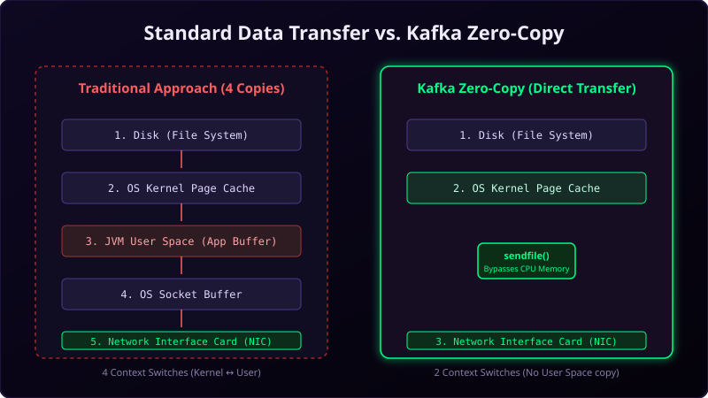

A single Apache Kafka cluster can handle millions of read and write requests per second. People are often surprised to learn that Kafka is written in Java and Scala and stores all its messages on physical hard drives.
Usually, writing data to disk is considered slow because disks have long seek times. So how does Kafka manage to outperform in-memory brokers? The secret lies in a series of highly optimized operating system integrations: **Sequential I/O**, the **OS Page Cache**, and **Zero-Copy Data Transfer**.

Imagine showing a document on a wall to an audience:
- Traditional Transfer: You take the document out of a drawer, copy it by hand onto a notepad, take the notepad to your computer, type it up, print it out, and then hand it to the audience. This requires multiple copies and context shifts.
- Zero-Copy Transfer: You slide the original document under a document camera projector. It instantly projects the image on the wall. The document is read once and displayed directly to the audience without ever being copied, redrawn, or processed.
The Pillars of Kafka's Speed
1. Sequential Disk I/O
Traditional databases use complex structures (like B-Trees) that write data to random sectors on disk, requiring the disk read/write head to move constantly (random seek).
Kafka is an append-only commit log. It writes new messages sequentially to the end of log files. **Sequential disk I/O is incredibly fast**, often matching or exceeding random memory access speeds because it enables the physical disk hardware to read ahead continuously.
2. OS Page Cache Utilization
Instead of maintaining in-memory cache structures in JVM heap memory (which would inflate garbage collection overhead), Kafka delegates caching to the operating system's **Page Cache**. All free system memory is automatically used by the OS to cache disk blocks. If a consumer reads a message shortly after a producer writes it, the data is served directly from RAM without hitting physical disks.
3. Zero-Copy Data Transfer (sendfile)
In standard network applications, transferring a file from disk to a socket requires four copy operations and four context switches between kernel space and user space.
Kafka bypasses this. It uses the operating system's native **sendfile()** system call. This allows the OS to copy data directly from the Page Cache to the network card buffer (NIC) without copying it into application memory first. This cuts CPU utilization and context switches in half.
Conclusion
Kafka's speed isn't a result of complex programming tricks; it is the result of clean, simple engineering. By treating disk files as append-only streams, leveraging OS page caching, and bypassing CPU copy operations using Zero-Copy transfer, Kafka turns hardware limits into performance assets.